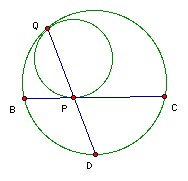
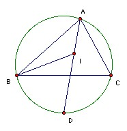

Two circles touch externally at I. The two circles lie inside a large circle and both touch it. The chord BC of the large circle touches both smaller circles (not at I). The common tangent to the two smaller circles at I meets the large circle at A, where A and I are on the same side of the chord BC. Show that I is the incenter of ABC.
Solution

Let one of the small circles touch the large circle at Q and BC at P. Expand with Q as center so that the small circle goes into the large circle. Then P goes to a point D on the large circle and BC goes into the tangent to the large circle at D, which must be parallel to the tangent to the small circle at P. Hence D must be the midpoint of the arc BC. Now consider triangles BQD, PBD. The angle at D is common and ∠BQD = ∠CQD (since arcs BD and CD are equal) = ∠CBD = ∠PBD. Hence the triangles are similar. So DB/DP = DQ/DB, so DB2 = DP·DQ.
We can now apply the same argument to the other small circle with a similar result. Now invert with center D and radius DB. Then P and Q change places. Also DB is the length of the tangent from D to the circle, so the points of contact of the two tangents from D remain fixed. Hence the circle maps into itself under the inversion. Similarly for the other circle. Hence their point of contact I must remain fixed under the inversion. So DI = DB. But DB is the length of the tangent from D to both circles, so DI must be a tangent to both circles. So A lies on DI. But since D is the midpoint of arc BC, it follows that DA bisects ∠A.

Now ∠BID = ∠ABI + ∠BAD. Since DB = DI, ∠BID = ∠IBD. Also ∠BAD = ∠CAD = ∠CBD, so ∠ABI = ∠BID - ∠BAD = ∠IBD - ∠CBD = ∠IBC. So IB bisects ∠ABC. Hence I is the incenter as required.

© John Scholes
jscholes@kalva.demon.co.uk
25 Nov 2003
Last updated/corrected 25 Nov 2003